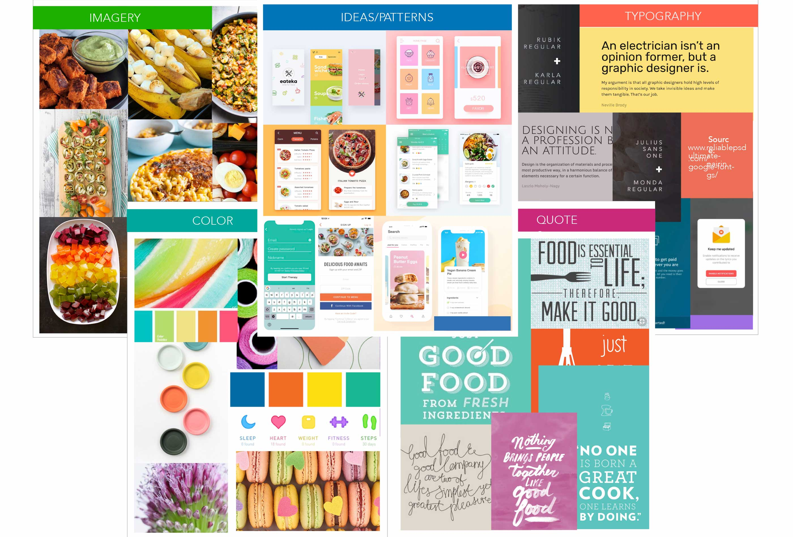

<section id="old-siam" class="project-details">
  <div class="project-body row no-gutters align-items-center justify-content-center">
    <div class="project-img col-lg-8 col-xs-4">
      <div class="project-title">
        <h1>Munchkin - Kids' Recipe App</h1>
      </div>
      <div class="project-summary">
        Goal: To design a recipe mobile app that is user-centered, by focusing on both, UX and UI design processes. For
        UX, the process involved competitive analysis
        and user research, creating user personas, defining MVP and user stories, designing a user flow, creating paper
        prototypes and usability testing. The UI design
        process included creating mood boards, wireframing, running preference tests, building a responsive design,
        mockups, creating a style guide, and user testing.
      </div>
    </div>
    <div class="golden-divider col-lg-8 col-sm-10 row"></div>
    <div class="munchkin-logo col-lg-8 col-xs-4">
      
    </div>
    <h4 class="munchkin-subtitle">
      Easy, delicious, and healthy recipes for your kids!
    </h4>
    <div class="col-lg-8 col-xs-4 munchkin-cookies">
      
    </div>
    <div class="project-img mb-5 col-lg-8 col-xs-4">
      <div class="row">
        <div class="col-lg-6 col-md-6 col-sm-12">
          <div class="project-img-caption with-text">
            Summary:
          </div>
          <div class="image-summary-no-layout mb-1">
            I created Munchkin, a specialized recipe app that aims to provide quick, easy, and fun recipes for kids. It is
            designed to primarily help working and stay at home parents plan meals, share, and
            have access to delicious and healthy recipes at their fingertips.
          </div>
        </div>
        <div class="col-lg-6 col-md-6 col-sm-12">
          <div class="project-img-caption with-text">Problem:</div>
          <div class="image-summary-no-layout mb-1">
            Working or stay-at-home parents today have to rely on either takeout or processed, packaged food as they do not
            have time to cook or even think about simple and quick recipes they can make. For
            children with dietary restrictions or allergies, the scope of possible recipes becomes even narrower.
          </div>
        </div>
      </div>
    
    
      <div class="row">
        <div class="col-lg-6 col-md-6 col-sm-12">
          <div class="project-img-caption with-text">Goal:</div>
          <div class="image-summary-no-layout mb-5">
            To create a time effective, simple-to-use and -navigate platform, that parents find useful for planning their
            children’s meals.
          </div>
        </div>
        <div class="col-lg-6 col-md-6 col-sm-12">
          <div class="project-img-caption with-text">Target Audience:</div>
          <div class="image-summary-no-layout mb-5">
            Working or stay-at-home parents, child care centers,
            parents wanting to cook traditional recipes.
          </div>
        </div>
      </div>
    </div>
    <div class="project-img mb-5 col-lg-8 col-xs-4">
      <h4 class="munchkin-process mb-2">
        PROCESS - USER RESEARCH
      </h4>

      <div class="image-summary-no-layout">
        I started by gathering information about potential users and their needs by following the Research Learning
        Spiral (RLS) process. This involved defining the research objective, developing a
        hypothesis, using research methods like interviews and surveys, and finally synthesizing
        the findings to understand user requirements.
      </div>
      <div class="project-img-caption with-text-less-mb">Pain Points that surfaced:</div>
      <div class="image-summary-no-layout">
        <ul>
          <li>Time and energy are a major factor in cooking habits</li>
          <li>Limited meal ideas lead to eating packaged or outside food</li>
          <li>Web searches are more frequently used compared to a recipe app</li>
          <li>Need a way to monitor child’s diet, plan meals, and keep track of supplies - Difficult to find trusted
            recipes</li>
        </ul>
      </div>
      <div class="project-img-caption with-text-less-mb">
        Potential Solutions:
      </div>
      <div class="image-summary-no-layout">
        <ul>
          <li>Offer quick and easy recipes that are trusted, healthy, and nutritious.</li>
          <li>Provide option to scan bar codes on items or manually enter item names</li>
          <li>Filter recipes based on time, ingredients, nutritional value</li>
          <li>Provide a platform for parents to share and discuss recipes, and experiences</li>
          <li>Option to filter recipes based on the kids diet and needs by creating a profile</li>
          <li>Be able to monitor child’s nutrition and save recipes</li>
          <li>Add recipes to meal plan, and ingredients to the shopping list from the recipe page - Way to share
            shopping list for convenience</li>
        </ul>
      </div>
      <div class="project-img-caption with-text-less-mb">User Personas:</div>
      <div class="image-summary-no-layout mb-5">
        Based on emerging patterns and similarities of users during my research, I created 4 personas to further
        understand user behavior, needs, and wants. The personas reflect users’ demographics, biography,
        interests, personality, goals, any forums or social media used, and important features
        to be included. In conclusion, I observed that the users follow
        a busy lifestyle, and aim to be efficient in cooking to enjoy some quality time with their family.
      </div>
      <div class="project-img col-lg-12 col-md-12 col-xs-4 mt-4">
        
      </div>
      <div class="project-img-caption with-text-less-mb">Key Performance Indicators (KPIs) chosen:</div>
      <div class="image-summary-no-layout">
        <ul class="ul-with-green-text">
          <li><span class="li-green-text">Usage</span> - Sliced by location, preferred language, preferred cuisine(s),
            free time available, and inferred
            information such as household income, education level, can help define the userbase</li>
          <li><span class="li-green-text">Time on Task</span> - Provide easy access to features and reduce the
            cognitive load on the user</li>
          <li><span class="li-green-text">Overall Satisfaction</span> - App reviews and ratings on app stores will help
            improve user experience</li>
          <li><span class="li-green-text">Task Success Rate</span> - Learning about abandonment rate per step of the
            task, time spent per step, any loading errors
            or other software problems, task exit path helps understand where users had the most difficulty</li>
          <li><span class="li-green-text">Engagement/Active Users</span> - Tracking daily and monthly active user
            numbers as a percentage of installs will measure
            how much the app is a part of users’ daily life. Studying features used the most by the most active users
            can
            help prioritize future product direction.</li>
        </ul>
      </div>
      <div class="project-img-caption with-text-less-mb">Features defined for the MVP based on the user stories:</div>
      <div class="image-summary-no-layout">
        <ul class="ul-with-green-text">
          <li><span class="li-green-text">Search and Filter</span> - Search for recipes and filter search results</li>
          <li><span class="li-green-text">Recipe List</span> - The main feature of the app will be a list of suggested
            recipes for the user</li>
          <li><span class="li-green-text">Recipe Details, Steps and Ingredients</span> - As the user explores a
            specific recipe, they will look for information
            like nutritional value, food type, serving size, cooking time, and ingredients used, to get an
            idea of what each recipe has to offer.</li>
          <li><span class="li-green-text">Sign Up</span> - Creating an account will make the app experience more
            customized and personal.</li>
        </ul>
      </div>
      <div class="project-img-caption with-text-less-mb">User Stories and User Flow:</div>
      <div class="image-summary-no-layout mb-5">
        My users value saving time and conveniently accessing recipes tailored to their preferences. These factors
        informed my most important user stories, which I then developed into the user flow seen below. The main
        features I included are: recipe list, meal planner, shopping list, forums, profile and search.
      </div>
      <div class="project-img col-lg-12 col-md-8 col-xs-4">
        <a href="./img/Munchkin_app_User_Flow.pdf" target="_blank">
          
        </a>
      </div>
      <h4 class="munchkin-process">
        PROCESS - USER INTERFACE DESIGN
      </h4>
      <div class="project-img-caption with-text-less-mb">Inspiration and Mood Boards:</div>
      <div class="image-summary-no-layout mb-5">
        After creating the user flow, I started putting together inspirational material that closely reflected the mood
        and direction of my app. I wanted the app to look clean, sleek, minimalistic, and simple. The color palette is
        a
        perfect balance of bright and bold hues like green and blue, and muted greys that add simplicity to the look
        and
        feel.
      </div>
      <div class="project-img col-lg-12 col-md-8 col-xs-4">
        
      </div>
      <div class="project-img col-lg-12 col-md-8 col-xs-4">
        
      </div>
      <div class="project-img-caption with-text-less-mb">Wireframes and User Testing:</div>
      <div class="image-summary-no-layout mb-5">
        At this stage, I first sketched out low-fidelity wireframes based on the user flow diagram. I chose a few user
        stories to work with and created rough sketches of the UI for iPhone 8 using pen and paper.
        The screens displayed the various stages for the user to get from point A to point B. I tested
        these initial sketches with potential users to gain feedback on the funcationality, usability,
        and navigation of the app. Based on feedback, and after a few iterations, I
        designed the mid and high-fidelity wireframes in Sketch, While working on these
        wireframes, I followed the iOS Human Interface Guidelines and used grids for precision.
        Further, I shared the high-fidelity designs with potential users, as well as other
        designers to make sure the design and flow of the app had no usability issues. There were some cosmetic
        errors, which I fixed and refined to create a polished UI.
      </div>
      <div class="project-img-caption">
        LOW-FIDELITY WIREFRAMES
      </div>
      <div class="project-img col-lg-12 col-md-8 col-xs-4">
        
      </div>
      <div class="project-img-caption">HIGH-FIDELITY WIREFRAMES</div>
      <div class="project-img col-lg-12 col-md-8 col-xs-4">
        
      </div>
      <div class="project-img-caption with-text-less-mb">Final Product:</div>
      <div class="image-summary-no-layout mb-5">
        After nailing down the high-fidelity wireframes, I started polishing the UI for my app in Sketch by adding
        details like icons, colors, images, text, buttons and other elements. I tried
        to ensure every screen was cohesive, and took into consideration users’ probable
        gestures and actions throughout the navigation.
      </div>
      <div class="project-img col-lg-12 col-md-8 col-xs-4">
        
      </div>
      <div class="project-img-caption">Mockups:</div>
      <div class="project-img col-lg-12 col-md-8 col-xs-4">
        
      </div>
      <div class="project-img col-lg-12 col-md-8 col-xs-4">
        
      </div>
      <h4 class="munchkin-process">
        Project Retrospective:
      </h4>
      <div class="project-img-caption with-text-less-mb">What went well?</div>
      <div class="image-summary-no-layout mb-5">
        Sharing ideas and designs early on with the users, during user testing, helped surface some valuable questions
        and possible problems that would have otherwise gone unnoticed. This helped in
        creating a user-centered design accounting to a better user experience.</p>
      </div>
      <div class="project-img-caption with-text-less-mb">What didn’t go well?</div>
      <div class="image-summary-no-layout mb-5">
        The users I interviewed did not represent a diverse group - in terms of race, gender, family size, age, income
        level. I may have gotten different types of feedback if my pool of
        interviewees was larger or more diverse.
      </div>
      <div class="project-img-caption with-text-less-mb">What can be improved?</div>
      <div class="image-summary-no-layout mb-5">
        Color palette could have been more child-friendly - A common request from users was to enable the child to be
        involved in planning their own meals. My minimalist design and color palette would
        perhaps not appeal to children or interest them in using the app.
      </div>
    </div>
  </div>
</section>